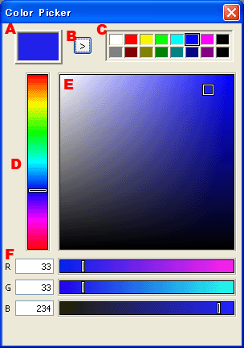

カラーピッカーダイアログ
カラーを編集するためのダイアログです。

現在のカラーを表示します。
現在のカラーをカラーパレットの選択領域に保存します。
アルファ成分は保存されません。
左クリックでカラーパレットのカラーを現在のカラーに設定します。
右クリックでカラーパレットの選択領域を変更します。
カラーの色調（Hue）を変更します。
カラーの彩度（Saturation）と明度（Value）を変更します。
カラーの各成分（RGB）とアルファ成分（A）を変更します。